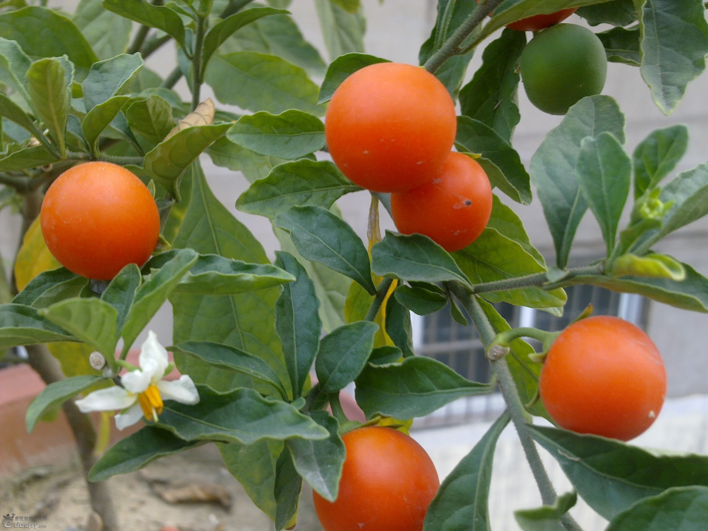

me
Hexo 是一个简单地、轻量地、基于Node的一个静态博客框架。通过Hexo我们可以快速创建自己的博客，仅需要几条命令就可以完成。
test

my new post
Hexo免费静态博客难点有两个，一是npm的安装，另一个是静态的设置与书写。至于如果来上传Hexo生成的静态博客，假如你实在不想用什么Git这类复杂的工具，完全可以用FTP软件将Public中文件上传到Web服务器上。
读书根本无用，但是充满了知道的快乐。—— 微博某『著』名『程序』猿
人，不免失败的时刻
人，不免失败的时刻。尽其在我，技不如人的失败，是没有什么好遗憾的。最可怕的失败，是当自己还有一搏的力气与机会时，却主动放弃的失败。
在github中的，只有master分支的内容才能显示到你访问的站点上，所以在使用hexo时，public的文件夹，也就是你的博客生成后的内容的文件夹，这个文件夹使用了clone远端服务器上master分支，这样保证了hexo能自动生成到public文件夹，并且提交到远端服务器上的master分支上。
github真是不错，能恢复这些内容，以前自己使用octopress的就是搞不清这两个分支的概念自己觉得很憋屈，于是没有再更新，前段时间是想在搭建一下，于是找到了hexo，这个使用方便的搭建工具，官方网站的内容还是比较详细的。
readme

#YAML 解析错误
JS-YAML: incomplete explicit mapping pair; a key node is missed at line 18, column 29:
last_updated: Last updated: %s
如果 YAML 字符串中包含冒号（:）的话，请加上引号。
JS-YAML: bad indentation of a mapping entry at line 18, column 31:
last_updated:”Last updated: %s”
请确认您使用空格进行缩进（Soft tab），并确认冒号后有加上一个空格。
有时资料可能没有被更新，或是生成的文件与修改前的相同，您可以尝试清除缓存并再执行一次。
$ hexo clean
Hello World
Welcome to Hexo! This is your very first post. Check documentation for more info. If you get any problems when using Hexo, you can find the answer in troubleshooting or you can ask me on GitHub.
Quick Start
Create a new post
|
|
More info: Writing
Run server
|
|
More info: Server
Generate static files
|
|
More info: Generating
Deploy to remote sites
|
|
More info: Deployment